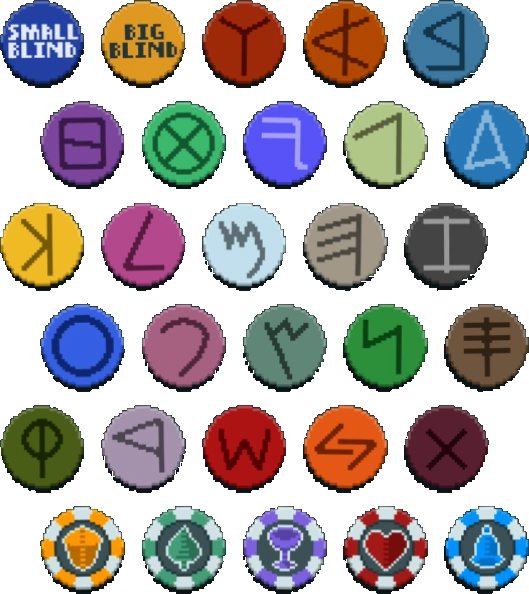
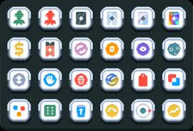

The Boss Blinds in Balatro act as mini bosses in a run. Depending on the kind of run you have going,
they can make or break the run.
There are a total of The main blinds are the Small and Big Blind. Then we have boss blinds.
The Boss blinds include in order of image below left to right: The Hook, The Ox, The House, The Wall,
The Wheel, The Arm, The Club, The Fish, The Physic, The Goad, The Water, The Window, The Manacle, The Eye,
The Mouth, The Plant, The Serpent, The Pillar, The Needle, The Head, The Tooth, The Flint, and the last
one for the main boss blinds, The Mark. For the ante 8 showdown boss blinds acting as the final boss, we have:
Amber Acorn, Verdant Leaf, Crimson Heart, Violet Vessel, and lastly, the Cerulian Bell.

The Hook:
Discards 2 random cards after hand is played. Makes it very hard to draw cards if you play throwaway hands.
The Ox:
When you play your most played hand, your money is set to $0. You can actually get money this way by
being in debt funilly enough.
The House:
The first hand of the blind is drawn face down.
The Wall:
Extra large blind. Most boss blinds are 2x small blind requirement. The Wall is 4x.
The Wheel:
Cards have a 1/7 chance of being drawn face down.
The Arm:
Levels down the played hand, reduced before scoring. Hand level cannot go lower than level 1.
The Club:
All club suited cards are debuffed.
The Fish:
Cards are drawn face down after a hand is played. only way to know what card you might have is by
sorting by suit.
The Physic:
Must play 5 cards.
The Goad:
All spade suited cards are debuffed.
The Water:
Start with 0 discards.
The Window:
All diamond suited cards are debuffed.
The Manacle:
Start with -1 hand size.
The Eye:
Cannot play the same hand type twice / no repeat hands.
The Mouth:
Only one type of hand can be played.
The Plant:
All face cards are debuffed.
The Serpent:
After playing or discarding, draw 3 cards. Very easy to get cards by just discarding 1 card.
The Pillar:
All cards played during the Small and Big Blind are debuffed.
The Needle:
You only get to play one hand. You have to make sure that you can actually beat it.
The Head:
All heart suited cards are debuffed.
The Tooth:
Lose money equivalent to the amout of cards played.
The Flint:
Base chips and mult are cut in half.
The Mark:
All face cards are drawn face down.
Amber Acorn:
All jokers are shuffled and then flipped face down.
Verdant Leaf:
All cards are debuffed until one joker is sold.
Crimson Heart:
One random joker is debuffed every hand played.
Violet Vessel:
Extra extra large blind. Violet Vessel is 6x.
Cerulian Bell:
One card is forcibly chosen and must be played or discarded.
Skip Tags
For the tags in Balatro, we have in order: Uncommon Tag, Rare Tag, Negative Tag, Foil Tag, Holographic Tag,
Polychrome Tag, Investment Tag, Voucher Tag, Boss Tag, Standard Tag, Charm Tag, Meteor Tag, Buffoon Tag,
Handy Tag, Garbage Tag, Etherial Tag, Coupon Tag, Double Tag, Juggle Tag, D6 Tag, Top-Up Tag, Speed Tag,
Orbital Tag, and lastly, the Economy tag.

Uncommon Tag:
There will be a free uncommon joker in the next shop.
Rare Tag:
There will be a free rare joker in the next shop.
Negative Tag:
There will be a free Negative enhacned joker in the next shop.
Foil Tag:
There will be a free Foil enhanced joker in the next shop.
Holographic Tag:
There will be a free Holographic enhanced joker in the next shop.
Polychrome Tag:
There will be a free Polychrome enhanced joker in the next shop.
Investment Tag:
Recieve $25 when the boss blind is defeated.
Voucher Tag:
There will be an extra voucher in the next shop.
Boss Tag:
Rerolls the boss blind.
Standard Tag:
A free Mega Standard Pack will be given to you that is opened immediately.
Charm Tag:
A free Mega Arcana Pack will be given to you that is opened immediately.
Meteor Tag:
A free Mega Celestial Pack will be given to you that is opened immediately.
Buffoon Tag:
A free Mega Buffoon Pack will be given to you that is opened immediately.
Handy Tag:
Rewards $1 for every hand in a run up to that point.
Garbage Tag:
Rewards $1 for every unused discard in a run up to that point.
Etherial Tag:
A free Spectral Pack will be given to you that is opened immediately.
Coupon Tag:
Initial cards and Booster Packs are free. Cards rerolled will not be free afterwards.
Double Tag:
Creates a copy of the next selected tag excluding Double Tag.
Juggle Tag:
+3 hand size naxt blind.
D6 Tag:
Rerolls start at $0 next shop.
Top-Up Tag:
Rewards 2 free common jokers. (Must have room).
Speed Tag:
Rewards $5 for every blind skipped.
Orbital Tag:
Levels up a random hand 3 times.
Economy tag:
Doubles your money with a max of $40.